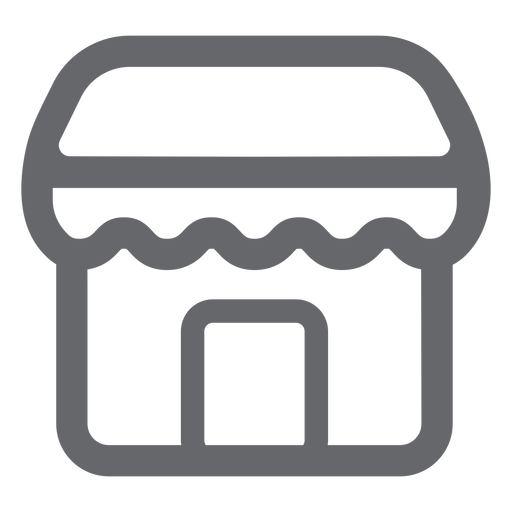

Teclados Mecanicos
Definicion:
Los teclados mecánicos son esos que tienen un interruptor independiente para cada tecla. Si quitas la tecla, verás que hay un único interruptor, de forma que si se estropea uno, sólo tienes que cambiar una pieza del teclado. Estos interruptores suelen ir unidos a una placa metálica, y debajo de ellas tienes la placa madre del teclado que registra cada una de tus pulsaciones.
AKKO 60%
Este teclado cuenta con switches azules, que proporcionan una respuesta táctil y auditiva satisfactoria con cada pulsación, lo que lo hace ideal para escribir y para los juegos de RPG. Además, la retroiluminación RGB personalizable en cada tecla te permitirá personalizar la iluminación para que se adapte a tu estilo y ambiente, lo que creará una experiencia de juego o trabajo única.
5 en existencia.
DUCKY ONE
¡Hola! Si estás buscando un teclado de alta calidad con un diseño moderno y una experiencia de escritura o juegos excelente, este teclado blanco y gris con switches grises y retroiluminación RGB es justo lo que necesitas.
124 en existencia.
YEIYAN Z33
Este teclado cuenta con switches rojos, lo que significa que tienen una fuerza de actuación baja, lo que resulta en una pulsación suave y rápida, lo que lo hace ideal para juegos de acción o cualquier tarea que requiera una rápida respuesta en el teclado. Además, el color negro es elegante y se adaptará fácilmente a cualquier estilo de decoración.
323 en existencia.
Adquiere los mejores teclados para TI!.
|  ¡Conoce nuestras tiendas! |
¡Compra con nosotros! |
¡Ahora en cada compra! |
| ¡Bienvenidos a la era de los teclados mecánicos! Si eres un fanático de la escritura o de los videojuegos, sabes que la calidad del teclado es esencial para lograr la mejor experiencia. Por eso, te presentamos algunas de nuestras sucursales. | ¿Quieres una experiencia de escritura y gaming más precisa, duradera y personalizable? Entonces los teclados mecánicos son la opción perfecta para ti. Con switches que soportan cientos de millones de pulsaciones, respuesta táctil y auditiva y opciones de personalización, los teclados mecánicos son una inversión a largo plazo que mejorará significativamente tu experiencia de tecleo y juego. ¡Haz la inversión en un teclado mecánico con nosotros y no te arrepentirás! | ¡Con cada compra, recibes un código de descuento por el 5% para tu siguiente compra! |